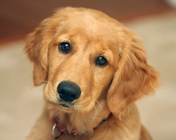

Золотистый ретривер — это собака гармоничного телосложения, с крепкими и мускулистыми конечностями и
округлыми лапами.

Голова пропорциональна корпусу, теменная часть широкая.
Хорошо выражен переход ото лба к морде. Мочка носа чёрная. Глаза тёмно-коричневого цвета, широко
расставлены, с тёмными краями век.
Уши среднего размера, висячие, посажены примерно на уровне глаз.
Шея мускулистая, довольно длинная. Грудь широкая. Хвост длинный, никогда не загибается. Шерсть
прямая или волнистая, толстый подшёрсток плохо пропускает воду. Окрас может состоять из любого
оттенка золотого или кремового цвета.
Иногда на груди могут быть небольшие белые пятна. Если золотистый ретривер белого цвета, то это
считается племенным браком.
Высота в холке составляет от 56 до 61 см у кобелей, и от 51 до 56 см у сук. Масса: у кобелей —
26—41,5 кг, у сук — 25—37 кг.

Команда Яндекс.Почты
Как читать почту с мобильного
6 июл
Команда Яндекс.Почты
Как читать почту с мобильного
6 июл
Яндекс
Соберите всю почту в ящик
6 июл